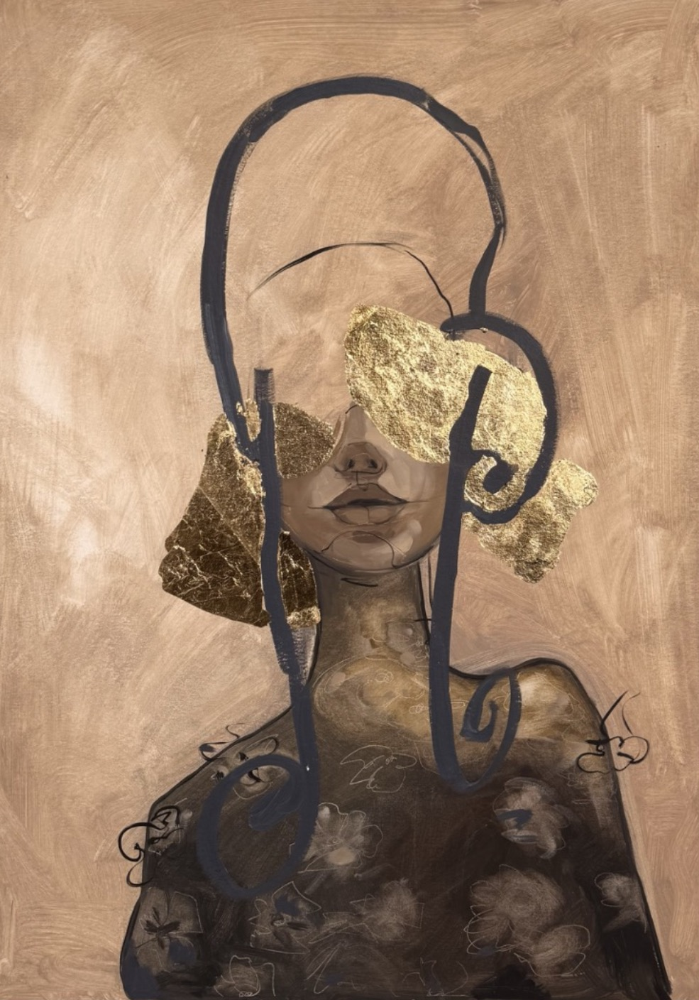

«Внутренний свет»
50 × 75 см, 2026
27 000 ₽
Холст на подрамнике, масло.
Слепота как прозрение.
Описание
Слепота как прозрение. Золото, закрывающее глаз, можно трактовать как замену обычного зрения внутренним видением: героиня «видит» не глазами, а интуицией или памятью. В целом, работа балансирует между личной исповедью и универсальным символом: это размышление о том, что скрыто от взгляда, и о цене, которую мы придаём невидимому.